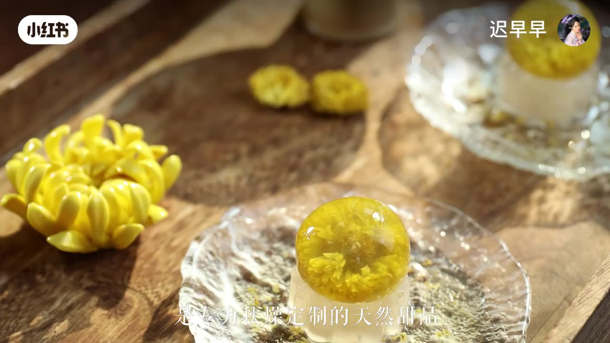
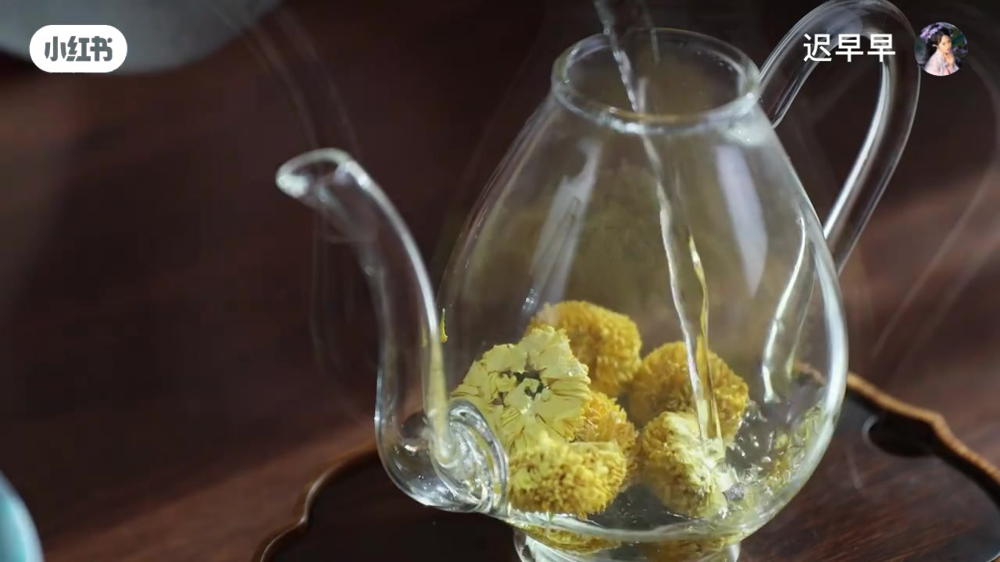
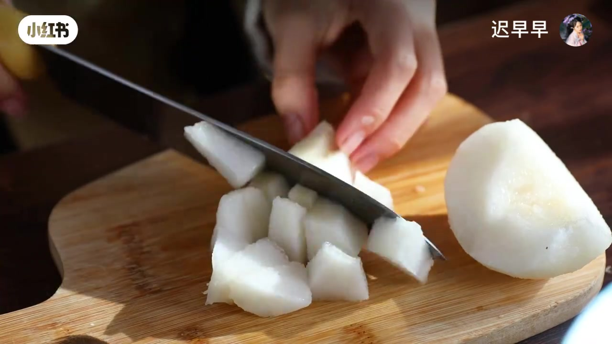
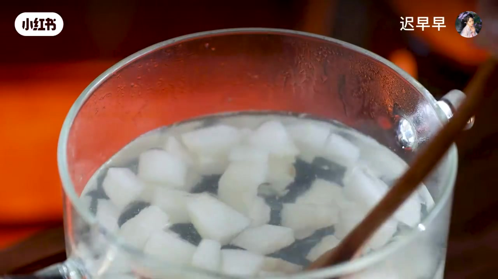
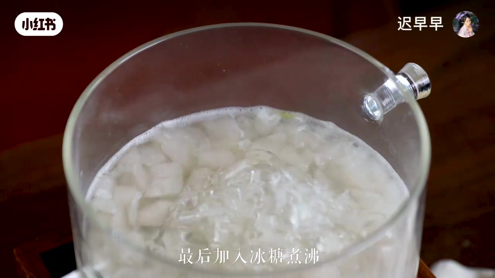
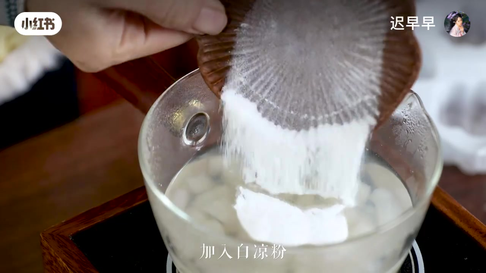
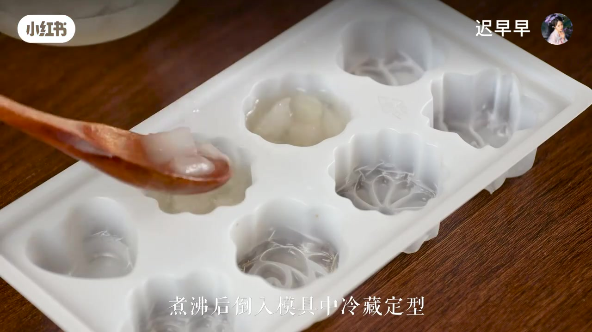
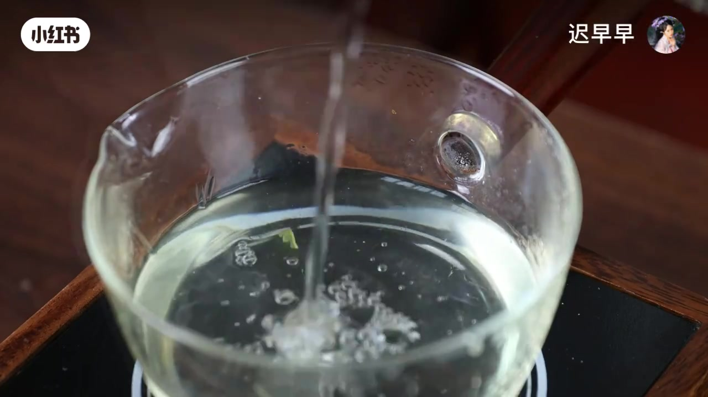
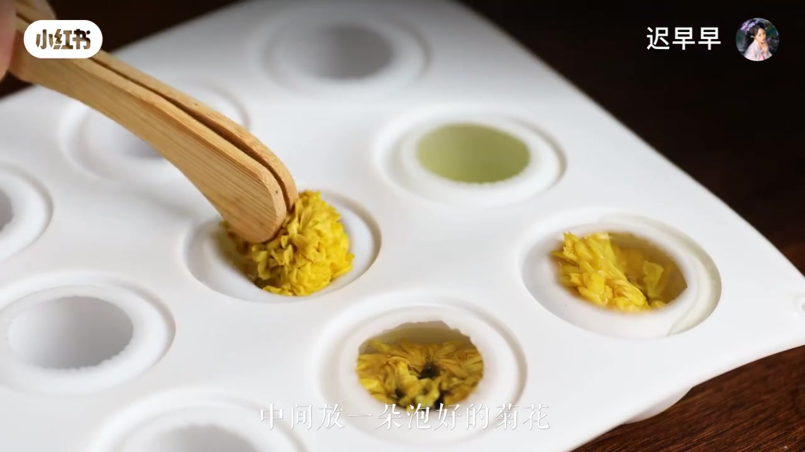
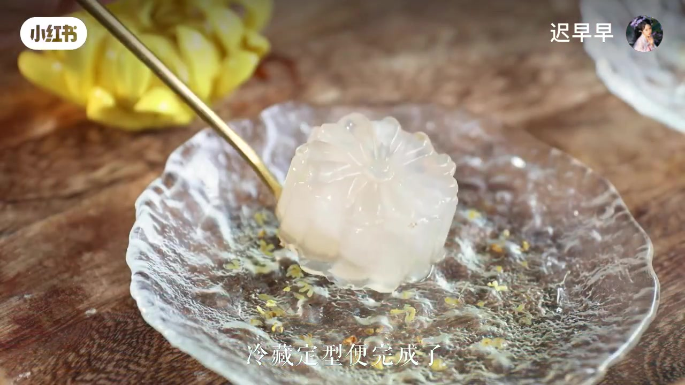

雪梨菊花銀耳凍
下面是雪梨銀耳凍，上面再放一顆藏著菊花的水晶球。清甜、潤喉、超漂亮。
免烤箱
湯／茶 : 粉＝10:1
冷藏就成型

動手前先記住
01
刀子請小心削皮、切丁時手指遠離刀刃。不熟就請老師幫忙。
02
熱湯會燙悶煮、煮沸後的鍋和模具都燙手，戴隔熱手套。
03
白涼粉要煮沸不煮開就不會好好凝固。攪到粉完全化開再倒模。
分成兩層來做

- 雪梨銀耳湯200 g先把雪梨、銀耳、冰糖煮成湯
- 白涼粉20 g做成雪梨銀耳凍
- 菊花茶100 g另做上層水晶球
- 白涼粉10 g做成菊花凍
- 泡好的菊花1 朵藏進圓球中間
好記口訣：湯／茶 : 白涼粉 ＝ 10 : 1。這樣凍起來 Q 彈，又不會太硬。

1
先泡一壺菊花茶
準備菊花，熱水沖泡備用。待會一部分拿來做凍，一朵漂亮的花要藏進圓球裡。

2
雪梨去皮切小塊
雪梨削皮、去核，切成均勻小丁。塊不要太大，煮起來更快，凍裡也比較好看。

3
下鍋，加銀耳悶煮
雪梨丁放進熱水裡，再加入銀耳。蓋上蓋子悶煮大約半小時，讓銀耳出膠、湯變黏潤。

4
最後加冰糖煮沸
銀耳軟了以後，加入冰糖攪到溶化並煮沸。這鍋湯又香又甜，先聞一下超幸福。

5
取湯加白涼粉
舀出雪梨銀耳湯 200 克，加入白涼粉 20 克，攪勻煮沸。粉要完全化開，才不會一顆顆。

6
倒入模具冷藏
煮沸後趁熱舀進花形模具，連同雪梨塊和銀耳一起放。送進冰箱冷藏定型。

7
菊花茶加白涼粉煮沸
另起一鍋，倒入泡好的菊花茶 100 克，加白涼粉 10 克，攪勻煮沸。顏色會淡淡金黃。

8
倒模，中間放一朵花
倒進圓球模具，用夾子放進一朵泡好的菊花，再補滿茶凍。冷藏定型就完成了！
疊在一起，像一朵會融化的秋日

怎麼擺盤？
脫模後，先放上雪梨銀耳凍當底座，再把菊花水晶球輕輕放上去。想更漂亮，可以撒一點菊花碎。
畫面來自原影片截圖 · 白涼粉記得煮沸、模具記得冷藏